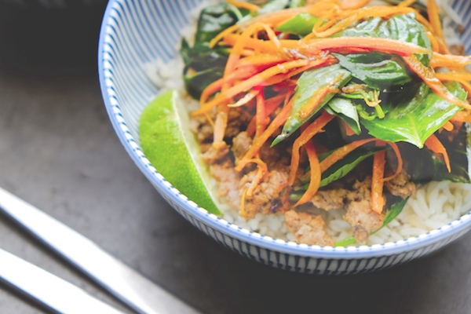

Home
Thai Beef Basil Bowl

Simple weeknight Thai inspired dish
- 2 tablespoons vegetable oil, divided
- 6 cloves garlic, thinly sliced
- 1 jalapeño, thinly sliced (take out the seeds if you want less heat)
- 1 lb. organic ground beef
- kosher salt & fresh ground pepper
- 1/2 cup chicken stock
- 3 cups fresh basil, decided
- 2 medium carrots, julienned & coarsely grated
- 2 scallions, thinly sliced (both white & green parts)
- 4 tablespoons fresh lime juice
- 2 tablespoons soy sauce
- 1 tablespoon fish sauce
- 1 teaspoon sugar
- steamed coconut rice & lime wedges for serving
- Heat 1 tablespoon oil in a lark skillet over high heat. Add garlic and jalapeño and cook until fragrant, about 30 seconds. Add beef, season with salt and pepper and cook, breaking up with a spoon and pressing down firmly to help brown, until cooked through and nicely crisped in spots, 8-10 minutes. Add broth and 2 cups basil leaves and cook, stirring until basil has wilted, about 2 minutes.
- Toss carrots, scallions, 1 tablespoon lime juice, 1 cup basil leaves, and 1 tablespoon oil in a small bowl.
- Mix soy sauce, fish sauce, sugar, and remaining 3 tablespoons lime juice in a small bowl until sugar dissolves.
- Top rice with beef and slaw and drizzle with soy dressing. Serve with lime wedges.